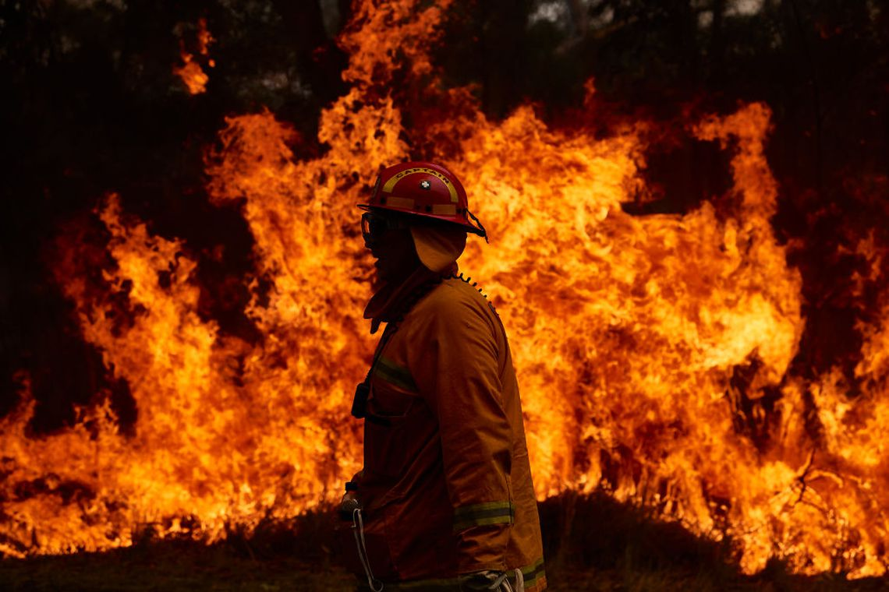

InforAleza
Inicio
nosotres
search

Crónicas
Energía eólica: los desafíos de la industria y la disputa ambiental
Autor
Agroecología: Un cambio de paradigma productivo, cultural, socioambiental y político.
Autor
Plástico o vida: una problemática que amenaza a los océanos
Autor
Ensayos
Protestas ambientales, la juventud y el futuro
Autor
Empresas contaminantes, políticas socioambientales... ¿Y la ONU?
Autor
Incendios forestales, deforestación y ganadería
Autor